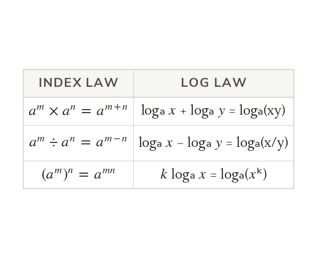
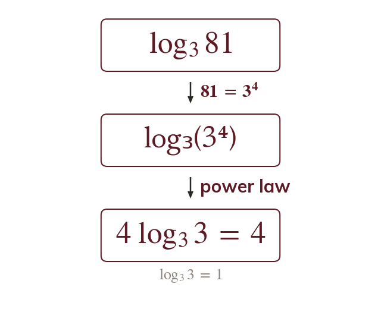
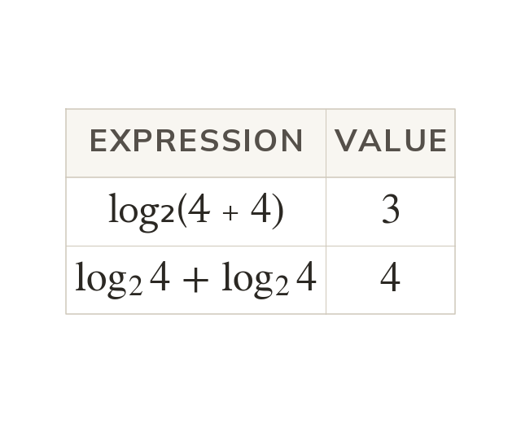
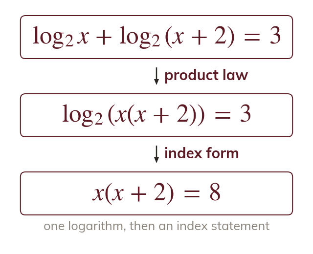
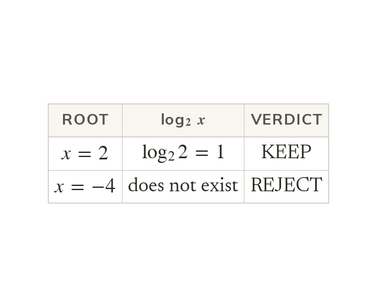
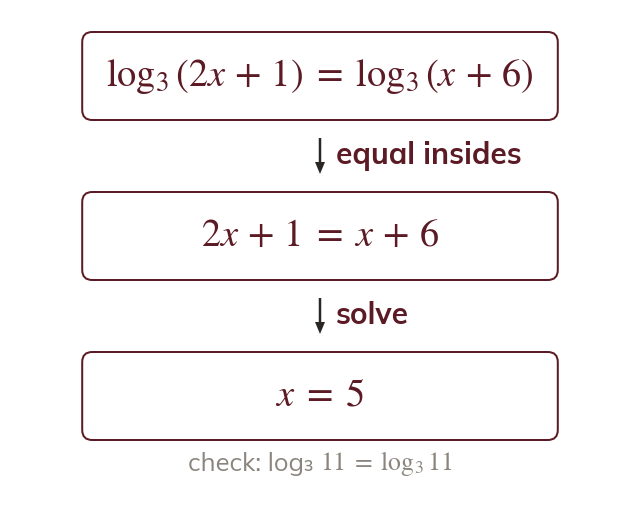

Adding logarithms multiplies
Adding powers of the same base multiplies the numbers, so logₐ + logₐ = logₐ(xy). For example, log₂ + log₂ = log₂
The laws of logarithms come straight from the laws of indices, since adding logarithms multiplies the numbers inside them. They turn several logarithms into one, which is how logarithmic equations are solved, and the power law is the step that solves in
Work down the page at your own pace. Write every answer in your book first, then click to check it.
Read each card, then follow the worked examples one step at a time.

Adding powers of the same base multiplies the numbers, so logₐ + logₐ = logₐ(xy). For example, log₂ + log₂ = log₂

A power inside a logarithm comes out as a multiplier, so logₐ(xᵏ) logₐ With and = ½ this gives = −logₐ and logₐ = ½ logₐ

The logarithm of a sum cannot be split. log₂(4 + = log₂ but log₂ + log₂
Pick an answer. If it's wrong, the feedback tells you which mistake it was.
Write the blanks in your book first, then tap each one to check.
Read each card, then follow the worked examples one step at a time.

To solve log₂ first combine the left side into one logarithm. Then write it as the index statement

gives or
log₂(−4) does not exist, so is rejected.

When each side is one logarithm to the same base, the numbers inside are equal. gives so
Pick an answer. If it's wrong, the feedback tells you which mistake it was.
Write the blanks in your book first, then tap each one to check.
Finished? Next lesson: 14.6 Solving Equations Using Logarithms.
For each skill, tap the one that is true for you today. Your Revise pages start with anything you mark Not yet.
Your ratings are saved on this device only.
Log in, then search for a code to practise that skill.